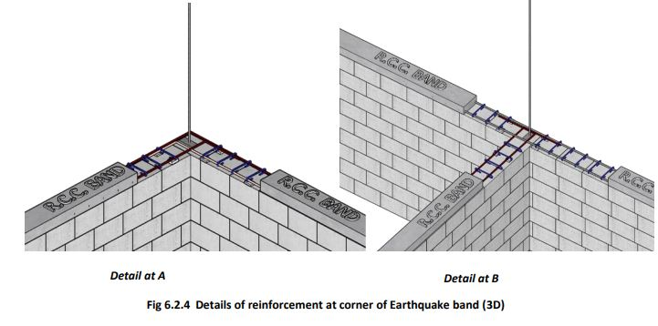
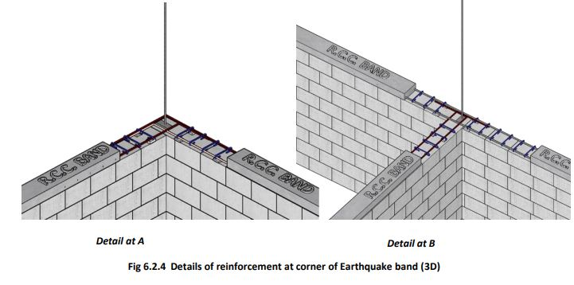

Construction of Plinth Band
Plinth Band Construction Details
Plinth is made at least 30 cm above the ground level. A higher plinth level should be preferred so that rainwater, snakes, etc., do not enter the house even during possible floods in the area.
Providing RCC Plinth Band:
1. Install Formwork: Construct formwork along the edges of the plinth masonry using timber, plywood, or metal sheets to define the plinth band's shape. Ensure to secure shuttering and alignment.
2. Place Reinforcement Bars: Provide horizontal bars for the RCC band/Bond Beam as per drawing (next page). Allow vertical seismic bars at the corners to pass through the horizontal bars.
3. Pour Concrete: Fill the formwork with M20 concrete mix, compacting it thoroughly to remove air voids.
4. Cure and Finish: Let the concrete cure for approximately 28 days. Keep it moist during curing to prevent cracking. Remove the formwork carefully and finish the surface as desired.
Details of making RCC Bands:
 

• A 75 mm thick RCC plinth band is provided continuously over all the walls to bind them together at the plinth level. This provides safety against earthquakes and non-uniform settlement of the foundation.
• The plinth bands/beams are reinforced with at least two 12mm diameter steel bars that bend at wall corners to enter the adjoining walls. The steel bars should not terminate at corners or T-junctions of walls.
Tips to remember:
1. Foundation and Soil: Ensure ground is leveled, soil compacted, and drainage is provided to prevent settling and water accumulation.
2. Material Quality: Use high-quality concrete (M20+), bricks, or stones, and reinforce with steel for strength and durability.
3. Dimensions and Alignment: Follow specifications for uniform height and width, ensuring accurate measurements and level alignment to avoid structural issues.